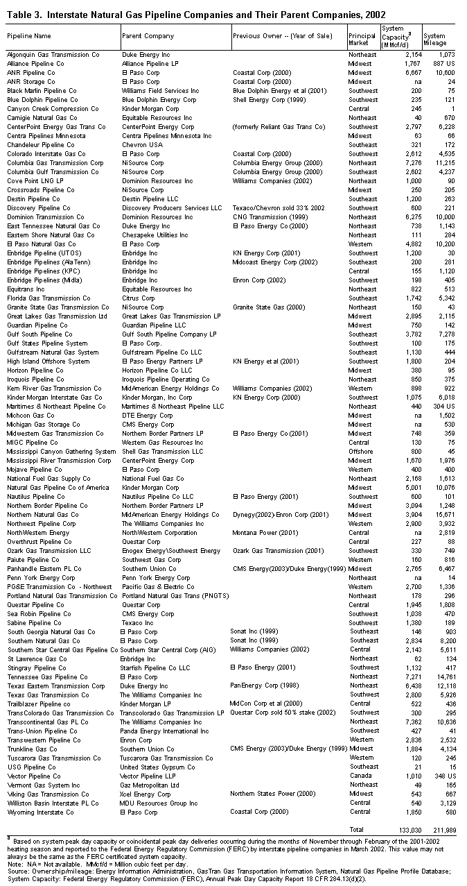
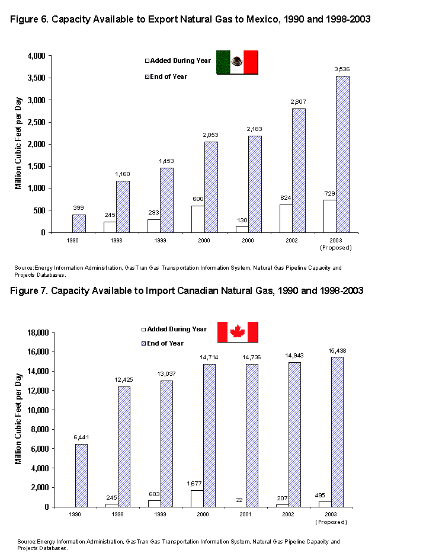

EIA Home > Natural Gas > Natural Gas Analysis Publications
Expansion and Change on the U.S. Natural Gas Pipeline Network 2002
|
Expansion and Change on the U.S. Natural Gas Pipeline Network 2002 EIA Home > Natural Gas > Natural Gas Analysis Publications Expansion and Change on the U.S. Natural Gas Pipeline Network 2002 |
Printer-Friendly Version |
|
Despite a national economic slowdown and a 4.9 percent drop in overall
U.S. natural gas consumption in 2001,(1) more than 3,571 miles of pipeline
and a record 12.8 billion cubic feet per day (Bcf/d) of natural gas pipeline
capacity were added to the national pipeline network during 2002 (Table
1). The estimated cost was $4.4 billion. Since late 2001, many of the market factors that helped fuel the large growth in new pipeline capacity additions have changed significantly. For instance, economic growth has slowed and many proposals to add new gas-fired electric generation capacity have been delayed or canceled. As a result, the need for new natural gas capacity has also weakened.
The deteriorating
financial condition of a number of energy companies over the past year
and the cessation of gas trading as a line of business by a number of
others have caused some pipeline company subsidiaries to re-evaluate their
commitment to specific pipeline expansion proposals. And, since a number
of expansion proposals have been predicated upon the building of new gas-fired
electric power plants, a number of which have been suspended, postponed,
or canceled, the cancellation of related pipeline laterals and even some
long-haul transmission projects might be anticipated also. The need for new import pipeline capacity from Canada also appears to have reached a temporary plateau. Since 2000, only 207 million cubic feet per day (MMcf/d) of new import pipeline capacity (Table 2) has been added (into the Western region) and a proposed 163 MMcf/d import capacity expansion to the Western region was recently canceled. Moreover, no additional new projects have been proposed to increase import capacity from Canada into the Midwest or Central regions through 2005. Import capacity development into the Northeast region, however, is a potential exception to the trend. Six import expansion proposals have been announced, with a combined increase of 2,109 MMcf/d of capacity through 2005. For the most part, this new capacity is slated to support new and proposed gas-fired power plants in the Boston and New York metropolitan areas. Overview/Trends A number of major short-haul,
though large-capacity, pipeline laterals
were constructed and placed in operation in 2002 (Table 2, Figure
1). Most of these pipeline segments were built to connect existing pipeline
systems to new gas-fired electric power generation plants. Twelve such
lines, totaling 303 miles, accounted for 3,280 MMcf/d, or 26 percent,
of the total new natural gas pipeline capacity added to the network in
2002. An undetermined number of smaller pipeline laterals that were constructed
to supply new gas-fired power plants were also placed in service in 2002.
However, their interconnections with the existing natural gas pipeline
system were nearby and the cost of their construction fell below the blanket
certificate threshold ($7.5 million)(4) for needing FERC or other regulatory
approval for construction. Such projects are normally carried out under
blanket certificate authority.(5) The Southeast and Western regions had the largest increase in natural gas pipeline capacity in 2002. The installation of the Gulfstream Pipeline system and the completion of a 478 MMcf/d expansion of the Florida Gas Transmission system in the Southeast contributed to making that region the leader in new natural gas pipeline capacity (3,056 MMcf/d), added miles of pipe (915), and total expenditures ($1.8 billion) (Table 2). Yet, the rapid installation of new pipeline capacity in the Western region, in response to the 2000-2001 energy crisis in that region, resulted in new capacity additions of 2,852 MMcf/d, closely approximating those seen in the Southeast region. However, expenditures were less than half that of the Southeast region, $0.8 billion, primarily because 5 of the 12 completed projects were short-haul laterals that supported new gas-fired electric power plants, and 4 were relatively less expensive compression or looping projects. The Southwest region had the smallest amount of added capacity because of a temporary drop in deepwater pipeline development in the Gulf of Mexico. In 2002, the Southwest region saw a 59-percent decrease in added capacity, 882 MMcf/d versus 2,157 MMcf/d in 2001, following several years of expansion activity (Table 1). Another reason for the low growth level was the relative small size and number of completed onshore expansion projects, owing to slower growth in both regional gas production and regional gas demand.
At the close of 2002, the
85 companies that make up the U.S. interstate
natural gas mainline transportation network operated about 212,000 miles
of pipeline and had the capability to deliver more than 133 Bcf/d of gas
(Table 3).(8) This represented a 2-percent increase in mileage from the
2001 level and an 11-percent increase in interstate pipeline capacity.
Compared with 2001, the installation of new natural gas pipeline capacity was up 39 percent, with construction expenditures up 161 percent (Table 1). In part, this sizeable expansion reflected the quick industry response to the energy crises in the Western region in late 2000 and early 2001, and the growing demand for additional natural gas service in the Southeast region. In 2002, more new natural gas pipeline capacity was added to the Western regional network than had been installed during any one year of the previous decade, as the region's interstate pipeline companies increased their capabilities to deliver gas to California. In addition, the two major California intrastate pipelines increased their capability to receive gas from the interstate system and to deliver that gas to their respective service territories. Interstate natural
gas pipeline capacity into California has increased by 10 percent since
2000, much of it added in 2002 (Figure 3, Table 2). Among the 2002 projects
contributing to this growth were a 207 MMcf/d expansion of the PG&E
Gas Transmission-Northwest pipeline between California and Canada and
a 230 MMcf/d expansion of the El Paso Natural Gas Company's South System
in New Mexico and Arizona (Table 2).  Of the more than 50 natural gas pipeline projects completed in 2002, most were short-haul in nature. Only 11 projects (Table 2) increased pipeline capacity across regional boundaries (Figure 4). Most of the interregional increase occurred on interstate pipeline systems transporting gas from the Southwest region to other regions: 317 MMcf/d to the Western region, 230 MMcf/d to the Northeast (via the Southeast) region, and 115 MMcf/d to Mexico. Additions to interregional capacity in 2002 amounted to only 1,535 MMcf/d overall, the smallest annual level in 10 years. The largest amount of interregional transport capacity remains with the 13 interstate pipeline systems transporting gas from the Southwest region to the Southeast region, 22,001 MMcf/d, while the second largest is on eight interstate pipeline systems operating between the Central region and the Midwest region, 15,187 MMcf/d (Table 4). The sizable growth in the latter - it was 11,728 MMcf/d in 1998 - reflects the large amount of new pipeline capacity from Canada added over the past several years, as represented by the new Alliance Pipeline and the several expansions of the Northern Border system between Montana and Illinois. Central Region (Including Rocky Mountains Area) Expansions While a significant amount of gas pipeline capacity has been built in the Central region over the past several years, the expanding production in the Wyoming/Utah coalbed methane and deep-gas fields has outpaced the installation of new interstate takeaway capacity in the region. The 2002 Trailblazer System expansion helped to alleviate the area's capacity constraint situation somewhat. However, capacity constraints in the area will likely continue until the completion of the Kern River Transmission system expansion (900 MMcf/d), which is scheduled for May 2003. This project will double the capability of the Kern River Transmission system to transport natural gas from Wyoming to California and Nevada. Meanwhile, the apparent lack of adequate takeaway interstate capacity has created an oversupply problem relative to available pipeline capacity in the area. As a consequence, natural gas producers without contracts for reserved interstate pipeline capacity, or without access to the very limited interruptible capacity with one or more of the interstate pipelines in the area, have experienced lower prices (well below spot price levels found elsewhere in the United States and Canada) to move their production. The relative abundance of coalbed gas in this region also has contributed to the situation. During 2002, seven of the eight pipeline projects completed in the Central region, representing 1,856 MMcf/d of new pipeline capacity, were in the Rocky Mountain area of the region (Table 2). Two of these, the Colorado Interstate Gas Company's Valley Line and Trailblazer System expansions, increased capacity on the interstate pipeline system, while five others added to the intrastate gas gathering pipeline infrastructure. The largest of these intrastate projects, the Jonah Opal Loop Project, added 400 MMcf/d to the existing pipeline that now connects the expanding Jonah field in southwest Wyoming with the Williams' Companies Opal Gas Processing plant (with access to the Northwest Pipeline and Kern River Transmission systems). As of March 2003, 20 natural gas pipeline projects, representing 2,786 MMcf/d of potential new interstate gas pipeline capacity for Central region shippers, have been proposed or approved for installation between 2003 and 2005. Included among these 20 projects are four new pipeline systems,(13) each of which exceeds 200 miles in length and has a capacity of at least 120 MMcf/d. They will target markets in the Midwest with gas production coming from the coalbed methane and deep-gas fields located in Wyoming, Colorado, Utah, and Montana. In addition, another four large-scale pipeline projects(14) are slated to expand existing capacity by 1,975 MMcf/d between these fields and markets in the Western region. In January 2003, Wyoming Interstate Gas Company announced its intention to build a 60-mile pipeline parallel to its existing system that would be capable of moving between 300 and 600 MMcf/d of coalbed methane gas production from eastern Wyoming to western Wyoming to interconnect with Kern River Transmission and Questar pipelines. Installation of such a line would greatly enhance the flexibility of gas movements in the State and, for the first time, provide Western markets significant access to Powder River Basin supplies. Interstate natural gas pipeline capacity into and out of the Midwest region has not increased significantly since 2000, when service began on the Alliance Pipeline (1,630 MMcf/d) between British Columbia, Canada, and Joliet, Illinois, and on the Vector Pipeline (720 MMcf/d) between Joliet, Illinois, and Ontario, Canada (Figure 2). The emphasis in the region in recent years has been to direct additional capacity from the Chicago Hub to expanding markets within the region, particularly northeast Illinois and southern Wisconsin. Two new pipelines, the Horizon Pipeline (380 MMcf/d-29 miles), and the Guardian Pipeline (750 MMcf/d-142 miles), were installed in 2002 to serve these areas (Figure 2). Another section of the Midwest region that experienced recent pipeline expansion, albeit not large, has been in the southwest Illinois area. In 2002, several projects were completed that expanded gas service in the East St Louis, Illinois, and adjacent St Louis, Missouri, area by 320 MMcf/d (Table 2). The steadily growing demand for natural gas in the St. Louis metropolitan area also has attracted several pipeline expansions originating from the west, including transportation of supply from as far as the Rocky Mountain area of Wyoming and Colorado. In 2002, 2,058 MMcf/d of capacity was added within the Midwest region with the completion of seven gas pipeline projects (Table 2, Figure 1). In addition to the completion of the new Guardian and Horizon in northern Illinois, two new laterals, the MichCon Renaissance Line (110 MMcf/d) in central Michigan and the Texas Eastern Transmission Hanging Rock (289 MMcf/d) line in southeastern Ohio, were installed and now provide local service to several gas-fired electric generation plants. For the short term (2003-2005), only five gas pipeline projects have been proposed for development in the region to date. No new expansions have been proposed within the region east of Chicago, Illinois. The five projects, totaling only 602 MMcf/d of new capacity (Table 1), are located in northern Illinois, southern Wisconsin, and southern Minnesota. All are either expansions to existing laterals or new laterals supplying new gas-fired electric generation facilities. No new pipelines, or major expansions, have been announced so far. The ANR Pipeline Company's West Leg expansion proposal (of its Madison lateral), 220 MMcf/d, is the largest project of the group. The WeEnergy's Guardian lateral (38-mile-65 MMcf/d) is slated to be in service in the spring of 2003 and represents the final service interconnection for the Guardian Pipeline, completed in 2002 (Figure 2). Northeast Expansions Natural gas pipeline capacity in the Northeast region has increased during the past two years with added capacity focused on serving the Boston and New York City metropolitan areas (Figure 3). Capacity into the New York City area increased by 9 percent between January 2001 and December 2002. While the increase into the Boston area during that time was only 2 percent, several projects are planned for 2003-2004, which would add an additional 1,245 MMcf/d to natural gas pipeline service in the area, a further 55-percent increase in capacity. In 2002, nine gas pipeline expansion projects were completed in the Northeast region (Table 2, Figure 1). Combined, they added 1,500 MMcf/d to gas pipeline capacity in the region. About 60 percent of the increase in capacity in 2002 came from the creation of new laterals, or expansion to existing ones (mainly slated to serve new gas-fired electrical generation plant needs). The remainder represented a sizable expansion of mainline transmission capacity (Table 2). Transcontinental Gas Pipe Line Company increased its mainline capacity into the region by 230 MMcf/d with the completion of its Sundance Expansion between Louisiana and Virginia, and within the region with the completion of the Leidy East project (126 MMcf/d) and the related last phase of its 289 MMcf/d Market Link project (127 MMcf/d added in 2002). Tennessee Gas Pipeline Company also increased its capability to serve growing peak-day demand in New England and other areas of the Northeast. Its completion of a new 487 MMcf/d lateral from the newly opened Stagecoach underground gas storage field in south central New York, and its related expansion of its northern Pennsylvania mainline, have improved its transportation service between Leidy (Hub) and its East Coast markets. Within New England, Tennessee Gas Pipeline Company also added 100 MMcf/d to its Rhode Island mainline to provide service to a new gas-fired power plant located in the State. These two pipeline companies have also announced several proposals that will continue their expansion in the Northeast. Together, the two companies represent 28 percent of the overall proposed Northeast region pipeline capacity increases between 2003 and 2005. Between 2003 and 2005, 24 pipeline expansion projects, representing 5,616 MMcf/d of potential new capacity, have been proposed to upgrade and improve gas service in the Northeast region. The proposed increase for 2003 is almost twice as much as the 2002 level, ranking the region second in expected capacity increases in 2003. Potential increases to regional capacity in 2004-05 place it third among regions for capacity growth during that period. In 2003, 18 percent of total new regional gas pipeline capacity is slated to come from Canada (see below), while in 2004 that figure jumps to 67 percent. Overall, almost 42 percent (2,344 MMcf) of the proposed new regional pipeline capacity is slated to improve service to the New York City area, while another 32 percent (1,820 MMcf/d) is slated for the Boston metropolitan area. Some of the additional capacity into the New York City area represents new pipeline capacity fed by the planned increase in pipeline capacity that will come south from Canada via expansion routes through New England. Most of the remaining new pipeline capacity could come from several pipeline proposals that include increasing capacity to the Leidy (Pennsylvania) area and to the New York City area. The New York City area itself is slated to increase its incoming pipeline capacity substantially between 2003 and 2005. Specifically, the long-delayed 714 MMcf/d Millennium Pipeline project could be placed in service sometime in late 2004 while several other projects are scheduled to add as much as 1,080 MMcf/d in 2003. Combined, possible expansions in 2003-2005 could increase incoming pipeline capacity by more than 53 percent (1,894 MMcf/d) over 2002 levels (Table 1). Projects completed over the past several years in the area have helped relieve many of the localized capacity constraint points that developed in the New York City area over the past 5 to 10 years. In addition, some of these recently completed projects are providing needed capacity to support new gas-fired electric power plants that are being built to feed the PJM power grid and the growing metropolitan area industrial base. With the slated increase in gas pipeline capacity scheduled for installation in the next several years, it is expected that enough new capacity will be available to handle existing and new demand in the area. However, if delays are encountered, or any of these projects are canceled, it is possible that some localized capacity constraint problems could redevelop. Southeast Expansions In 2002, eight pipeline expansion projects, representing 3,056 MMcf/d of new gas pipeline capacity, were completed in the Southeast region. The largest of these, and the most significant, was the new Gulfstream Pipeline System (Figure 2), which has the capability to deliver up to 1,130 MMcf/d to central Florida from Alabama/Mississippi via the Gulf of Mexico. Gulfstream also completed an interconnection with the Gulf South Pipeline in Alabama to provide regional gas shippers with greater flexibility in shipping gas via its system. Between 2003 and 2005, 22 proposed pipeline expansion projects, or project phases, could potentially add as much as 8,761 MMcf/d to gas pipeline capacity in the Southeast region. If this level is reached, the Southeast region would lead the nation in new capacity additions during the period. However, a sizable portion of this potential capacity comes from several large competing proposals (where only one might survive) and several other large pipeline projects that still remain in their planning stage. For example, three proposals, each to build 700-800 MMcf/d capacity pipelines between LNG vaporization facilities located in the Bahama Islands and South Florida, are competing for similar markets and are predicated upon the future development of several new gas-fired power plants in the area. Nevertheless, the need for new pipeline capacity is strong in the region. At least five storage-related pipeline expansion projects, including a new 185 MMcf/d pipeline to provide greater access to the recently reactivated Elba Island LNG import facility, are very likely to be completed as designed. Several high-deliverability (salt cavern) underground gas storage facilities are being built in the region to support the growing variable load needs of such customers as gas-fired power plant operators. Two such facilities, the Richton (2004) and Southern Pines (2003) storage sites in Mississippi, will interconnect with the interstate pipeline system via three separate 600 MMcf/d capacity laterals. The Southern Natural Gas Company and Florida Gas Transmission Company (despite increased competition in its Florida market from Gulfstream Pipeline) continue to schedule expansions to their respective systems in the region. Southern has completed at least one expansion project each year since 1996 and plans three more through 2005. Although most of its expansions, with the exception of two planned for 2003, represented less than 100 MMcf/d each in new capacity, demand growth in Southern Natural's service territory has necessitated a steady increase in expansion capacity. Similarly, gas demand growth in Alabama and particularly in Florida has necessitated capacity expansions on Florida Gas Transmission's system each year since 2000, including two more scheduled for 2003 (all greater than 100 MMcf/d in added capacity).(15) Western Expansions In 2002, 2,852 MMcf/d of gas pipeline capacity was added in the Western region with the completion of 12 major projects (Table 2). New pipeline capacity in the Western region accounted for about 22 percent of all gas pipeline capacity additions in the Lower 48 States in 2002, compared with only 2 and 3 percent in 2000 and 2001, respectively (Figure 5). Contributing to this large jump was that four of the five major interstate natural gas pipeline systems in the region underwent capacity expansions of from 5 to 10 percent in 2002, while two entirely new interstate natural gas pipeline systems were also placed into service. In addition, the opening of several new gas-fired electric generating plants in the region required the installation of five new lateral (feeder) pipelines and the expansion of several mainline pipeline segments. Completion of the
El Paso Natural Gas Company's Line 2000 project, which entailed the conversion
of an oil pipeline to replace a major portion of its vintage South System,
was not originally slated to include an expansion of capacity. But as
gas demand in Arizona and southern California grew during the 2000-2001
energy shortfall, the project was modified to include an upgrading of
several gas compressor stations along the route, with an increase in capacity
of 230 MMcf/d. Growth in Import/Export
Pipeline Capacity Initially, during
the mid-1990s, available gas productive capacity in existing Canadian
gas production areas was directed toward expansions of existing U.S. natural
gas pipeline systems such as PG&E Transmission-Northwest Company (formerly,
Pacific Gas Transmission Company), Great Lakes Gas Transmission Limited,
and Viking Gas Transmission Company. Several new importing pipelines,
such as the Iroquois Gas Transmission system and the Empire Pipeline,
were also built to reach growing U.S. markets. Subsequently, as the surplus
existing production sources were tapped for export, new Canadian natural
gas reserves were discovered and their production directed mostly to markets
in the United States. This new Canadian productive capacity was found
primarily in two areas, in northeast British Columbia and offshore eastern
Canada. The Sable Island
natural gas discoveries of the mid-1990s on the Scotian Shelf, offshore
eastern Canada, led to the development of the 440 MMcf/d Maritimes and
Northeast Pipeline system between Nova Scotia and Massachusetts in 1999.
This system now serves markets in Maine, New Hampshire, and northern Massachusetts.
In 2003, its reach will extend to the Boston metropolitan area with the
completion of a 350 MMcf/d extension. A doubling of its capacity has been
proposed (filed with FERC) for 2004.  While none of the
other proposals is planned to extend into the Maritimes & Northeast
pipeline's service territory, it is quite possible that, if current gas
demand projections throughout the Northeast do not live up to expectations,
the sponsors of the various active proposals will either have to scale
back capacity expansion levels, cancel their project completely, or compete
with other projects by expanding the scope of their service territories
beyond the current boundaries.
2. All known inter- and intrastate gas pipeline projects (including large gathering headers and delivery laterals) that have added, or may add, substantial new capacity to the national pipeline grid are included in this review. 3. Energy Information Administration, Natural Gas Monthly, "Status of Natural Gas Pipeline System Capacity Entering the 2000-2001 Heating Season," DOE/EIA-0130(2000/10) (Washington, DC, October 2000), Figure SR4. 4. The monetary limit for blanket certificate coverage is adjusted annually by the Federal Energy Regulatory Commission (FERC) to account for inflation. In 2001, the limit was $7.5 million. 5. Blanket certification can be used for relatively small projects. A blanket certificate approves a series of similar actions in one authorization. For instance, construction of small additions to a pipeline may be authorized by a blanket certificate, provided the total cost does not exceed some threshold level and other eligibility criteria are met. 6. The recent downgrading of credit ratings of a number of pipeline parent
companies or sponsors may have been a factor as well. The dramatic fall
in the stock prices of many energy companies and the lowering of their
bond-ratings by the S&P and other bond-rating services have made it
harder for some pipeline companies to raise the capital for pipeline expansions. 7. Natural Gas Intelligence Press, The Weekly Gas Market Newsletter,
"Williams Ensures Liquidity with $3.4B Deals, Sacrificing Heavy-Duty
Assets" (August 5, 2002). 8. Interstate pipeline companies file an annual capacity report (18 CFR
§284.12) with the Federal Energy Regulatory Commission (FERC) that
reports their daily system capacity based on a design estimate of how
much their system can deliver for current shippers on a systemwide peak
day. Total capacity on these systems usually represents the sum of capacity
at all delivery points, including interconnections with other interstate
pipelines. 9. These interconnections provide Trailblazer Pipeline shippers with access
to Midwest markets. 10. These gathering system laterals connect the expanding Wyoming production
areas with the pipeline systems that serve the area : Kern River Gas Transmission
Pipeline, Questar Pipeline, Northwest Pipeline, Wyoming Interstate Pipeline,
and Colorado Interstate Gas Pipeline. The latter two systems interconnect
with the Trailblazer system, while the others serve markets in Utah and
the Western region. 11. Energy Information Administration, Natural Gas Productive Capacity
for the Lower 48 States 1985-2003, web site www.eia.gov/pub/ oil_gas/natural_gas/analysis_publications/ngcap2003/ngcap2003.html
(March 31, 2003). 12. The Colorado Interstate Gas Company expanded (130 MMcf/d) its system
in the Raton Basin of southeast Colorado in 2001 and 2002 to accommodate
increased coalbed methane production in the area. 13. They are: the Colorado Interstate Gas Company's Cheyenne Plains Pipeline
(500 MMcf/d-2005), Kinder Morgan Advantage Pipeline (330 MMcf/d-2004),
Northern Border Pipeline's Bison Project (250 MMcf/d-2004), and Williston
Basin Interstate Pipeline's Grasslands Project (180 MMcf/d-2004-05). 14. They are: Kern River Gas Transmission's System Expansion (900 MMcf/d-2003), Northwest Pipeline Company's Rockies expansion (175 MMcf/d-2003), TransColorado Gas Transmission's Window Rock Lateral (150 MMcf/d-2005), and Kinder Morgan Interstate's Silver Canyon Pipeline (750 MMcf/d-2006). 15. Florida Gas Transmission Company's previous major increase in system
capacity (by 65 percent) occurred in 1995. 16. In contrast, in 2001, enough new capacity was installed to increase
overall gas pipeline capacity (excluding gathering systems) in the Gulf
alone by more than 5 percent. 17. Energy Information Administration, Natural Gas Monthly, Table
5, "U.S. Natural Gas Imports, by Country, 1996-2002," DOE/EIA-0130(2003/02)
(Washington, DC, February 2003). 18. On February 27, 2003, EnCana Corp. notified the Canadian National
Energy Board (NEB) that it was delaying plans to develop its proposed
400 MMcf/d Deep Panuke project located under the Scotian Shelf. This action
could temporarily limit the availability of gas supplies to any potential
Maritimes & Northeast pipeline expansion. 19. In fact, on February 5, 2003, Transcontinental Gas PipeLine Company
announced that it had requested permission from FERC to downsize its Momentum
expansion project from 359,000 Dth/d to 323,000 Dth/d because of changes
in the needs of several electric generation customers in the Southeast.
20. It should also be kept in mind that estimated costs are nonexistent
or unannounced for a number of pipeline expansion proposals that have
yet to be filed with regulatory authorities. Consequently, the cost totals
provided for 2003 and beyond in Table 1 should be considered low.
|
|
|
![Text Box: This special report looks at the level of new capacity added to the national natural gas pipeline network in 2002 and the current capability of that network to transport supplies from production areas to U.S. markets. In addition, it examines the amount of additional capacity proposed for development during the next several years and to what degree various proposed projects will improve the deliverability of natural gas to key market areas. Questions or comments on the contents of this article should be directed to James Tobin at james.tobin@eia.doe.gov or (202) 586-4835. james.tobin@eia.doe.gov](images/abstract.gif)
![Gas Pipeline Capacity Development need for new or additional pipeline capacity to satisfy a growing
demand for natural gas can be met in several ways: build and entirely
new pipeline; convert an oil or product pipeline; or expand an existing
natural gas pipeline system. Building an entirely new pipeline system
involves many more cost factors than the latter two methods; new
rights of ways must be acquired, new compressor stations must be
built, and an extensive new receipt, delivery and interconnect infrastructure
must be incorporated.
Expanding or converting an existing system, on the other hand, is
less expensive since it only involves modifying or adding to a portion
of a pipeline system, such as laying a new parallel pipeline (looping),
replacing old pipe with larger diameter pipe, adding a new compressor
station/unit, or upgrading an existing compressor station/unit.
Constructing an extension from the terminus of an existing pipeline
system, or constructing a large lateral to, or from, an existing
mainline system, will reflect characteristics of both an expansion
and new pipeline project. Usually, while no new compressor stations
may be required, routing has to be optimized and rights-of-way have
to be acquired. Moreover, when a large lateral/extension is constructed,
the mainline pipeline itself may have to be expanded, perhaps as
far back as the original source of supply.
Because each pipeline project has its own unique profile, it is
difficult to develop a comparison of pipeline capacity development
based on any combined measures of cost, mileage, and capacity. Indeed,
most pipeline projects are a mix of development/expansion methods.
Nevertheless, for purposes of this review, the design daily throughput
is used as the common unit of measurement. Further, each project
has been categorized according to what appears to be the bulk of
the overall effort involved, i.e., adding compression, and new pipe
(looping), building a new lateral, or building and entirely new
pipeline system.](images/gaspipedev.gif)